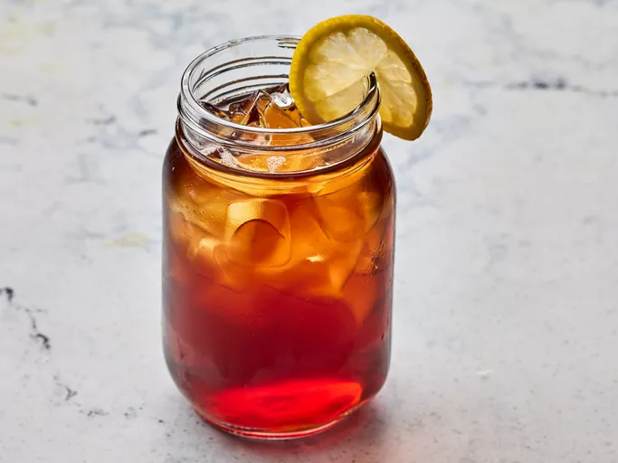

Smooth Sweet Tea

Description
This sweet tea is a classic Southern drink perfect for hot summer days!
It takes a whooping 3 hours and 20 minutes to prepare, but it yields 8 cups.
Ingredients
- 1 pinch baking soda
- 700ml of boiling water
- 6 tea bags
- 75% of a 350ml cup of white sugar
- 2.1 Liters of cool water
Steps
- Gather ingredients.
- Sprinkle a pinch of baking soda into a 64-ounce, heat-proof glass pitcher. Pour in boiling water and add tea bags. Cover and allow to steep for 15 minutes.
- Remove tea bags and discard; stir in sugar until dissolved. Pour in cool water; refrigerate until cold, about 3 hours.